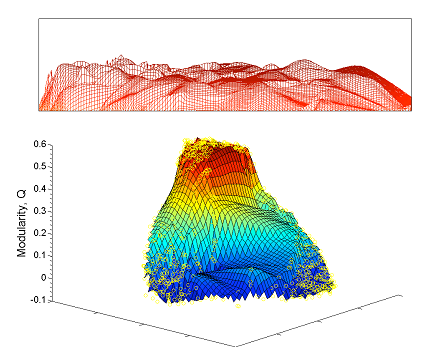

On modularity maximization
 This page is a companion for "The performance of modularity maximization in practical contexts", by Ben Good, Yva de Montjoye, and Aaron Clauset. It hosts our implementation of the simulated annealing (SA) algorithm we used for sampling high-modularity network partitions and the embedding algorithm we used to construct a low-dimensional visualization from these samples. The SA code is written in Python (v 2.X) and requires the NumPy and SciPy libraries, while the embedding algorithm is written in standard Matlab. Both are run from the command line and read/write plain text files.
Note: this code omits some of the more complex experimental procedures mentioned in the paper. We felt this was necessary to preserve ease of use for what we envision as the default use-case (creating a low-dimensional visualization of the modularity landscape for an arbitrary real-world network). Nevertheless, it should be relatively clear to an intermediate-level programmer how to adapt this code for more complex tasks.
Journal Reference
-
The performance of modularity maximization in practical contexts.
B. H. Good, Y.-A. de Montjoye and A. Clauset.
Physical Review E 81, 046106 (2010).
Obtaining high-modularity partition samples
This code runs our simulated annealing (SA) algorithm for sampling the high-modularity partitions of a given network. The network input format can either be a standard adjacency list (with optional weights) signaled by a ".pairs" extension or a full adjacency matrix signaled by a ".adj" extension (see the README file for more information). Directed networks are supported by a command-line option.
This code will take the input graph and run the SA until a local modularity maximum is found with high probability. There is an option to repeat this process for a total of N independent runs. The SA algorithm uses the "single-node" moveset and the geometric cooling schedule outlined in the paper, and the cooling schedule parameters can be specified on the command line. By default, each partition sampled by the SA algorithm is recorded in the specified output file (there is also an option to record only the local optima in order to save disk space). There is a second program that takes these "unfiltered" samples and selects a single partition from each independent run to save in a separate output file in the manner discussed in the paper. It also ensures the uniqueness of these "filtered" partitions, so that the filtered samples can then be passed to the visualization program. Running any of these programs with the "-h" option prints the usage information and a list of the command-line options. If the input text files are not formatted correctly, the program will crash.
Sampling code (Python)
Creating low-dimensional visualizations
This code takes a sample of partitions of a network and creates a 3D visualization of the modularity landscape generated by these partitions. Distances are calculated using the variation of information metric and the low-dimensional embedding is constructed using the Curvilinear Component Analysis (CCA) algorithm in the manner described in the paper. The input format is just the output of the SA sampling program (the precise format is described below in case a different sampling method is employed). This program then creates a Matlab figure that can be saved in a variety of formats. If the input file contains identical partitions the program will crash.
Visualization code (Matlab)
Partition file formats
In order to support the efficient i/o of different partitions of a network, the code uses a special text format to describe these partitions and their modularity values. This is the output format of the SA sampling code and the input format for the visualization code, so users who wish to employ a different sampling method can simply modify their code to output partitions in this format.
In this format, each line represents a different partition and is of the form
Q,[s_1,s_2,...,s_n]
where Q is the modularity of that partition and s_i is the integer module label for the ith node in the network. The modules are labeled in such a way that
s_i <= max(s_1,s_2,...,s_(i-i))+1
Lines with Q=-2 are ignored the embedding algorithm, since they are used to denote the end of a particular SA run.
A note about bugs and your use of this code
The code located here is provided as-is, with no warranty, etc. (It's under GPL v2.)
But, if you do experience problems using the code, please let us know via email. We're
not actively maintaining this code anymore (it's research code, so you're largely on
your own both to understand what it does and adapt it to your needs). That being
said, there are copious comments in the code files in case you want to modify them,
and if you ask a short question very nicely over email, we might be able to help you
out.
Finally, if you use this code in an academic publication, it would be courteous of you to thank Ben Good in your acknowledgements for providing the code.
A note about network data
The three metabolic network data sets we used in the paper were provided to us by
Mikael Huss and
Petter Holme, and were originally developed
as part of the following paper:
- M. Huss and P. Holme, "Currency and commodity metabolites: their identification and relation to the modularity of metabolic networks." IET Systems Biology 1, 280 (2007).
Updates
6 November 2014: replaced modularity_sampling code with new version 1.0.1, which plays nicely with current version of Python/Numpy/Scipy.
31 March 2010: placed initial version of webpage and v1.0.0 code packages online.